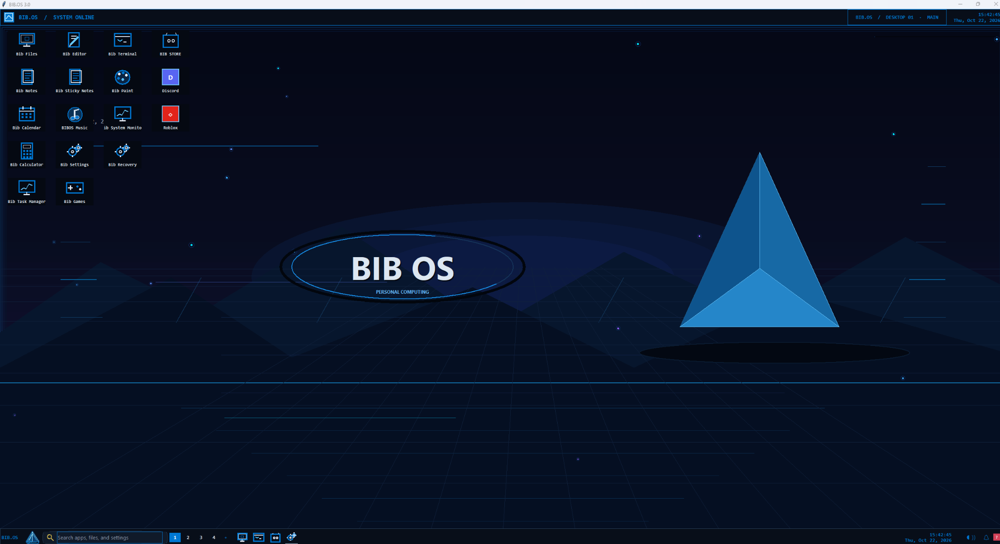

Quickly launch BIB OS apps using typed commands.
🗂️
File Manager
Explore files and folders within the BIB OS environment.
BIB OS is a Windows-inspired desktop application featuring familiar windows, practical utilities, and a growing collection of built-in tools.

Useful tools, familiar controls, and a classic desktop feel.
Explore files and folders within the BIB OS environment.
Use built-in commands and explore a terminal-inspired interface.
Launch and organize apps in a familiar desktop workspace.
Find tools quickly or launch registered apps using the Run dialog.
Explore settings, Task Manager, and other built-in controls.
Find documentation and troubleshooting guidance in one place.
The public download is not available yet. Check back for a verified release.
Only download future releases from the official project website. BIB OS is a desktop application, not a replacement for Windows.
A look at the tools and improvements being developed for BIB OS.
Quickly launch BIB OS apps using typed commands.
Improved desktop search and navigation.
More system information and management tools.
Built-in documentation and troubleshooting resources.
BIB OS is an independently developed Windows desktop project inspired by familiar operating system interfaces. The goal is to create a useful, customizable desktop-style experience while continuing to improve performance, reliability, and features.
Back to top ↑